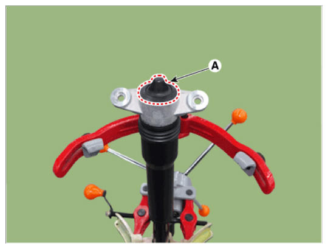
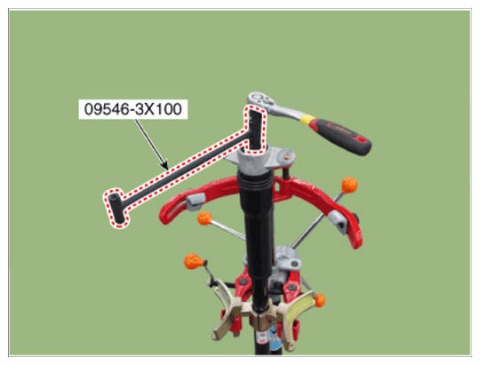
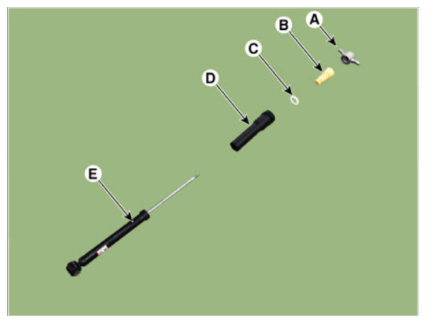

Repair Procedures: Disassembly
WARNING: This page is about a different variant/trim than selected.
- Remove the insulator cap (A).
 Courtesy of HYUNDAI MOTOR AMERICA
|
- Loosen the lock nut by using the SST (09456-3X100).
 Courtesy of HYUNDAI MOTOR AMERICA
|
- Separate the insulator (A), bumper rubber (B), spacer (C), dust cover (D), shock absorber (E).
 Courtesy of HYUNDAI MOTOR AMERICA
|